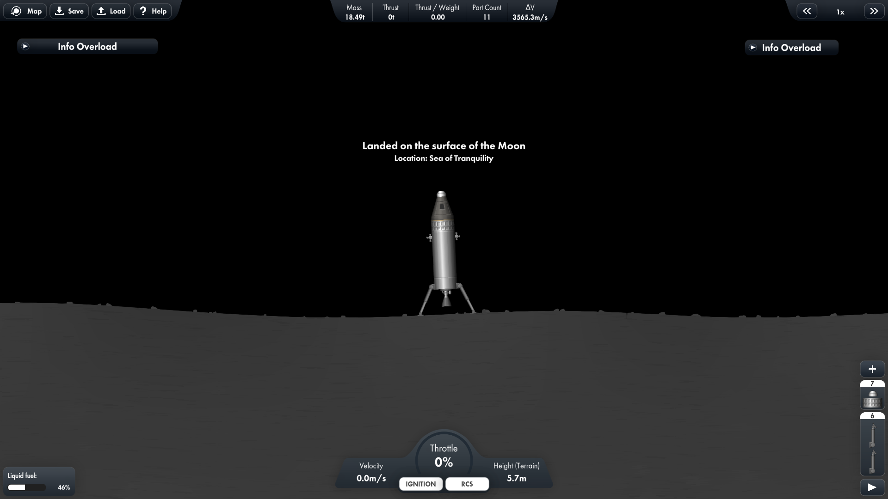
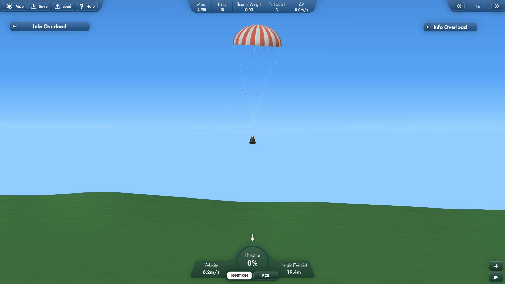

Rocket Analysis


Homepage
Hobbies
├─ Microscopy
├─ Photography
└─ Biology
Engineering
├─ Resources
└─ Personal Projects
├─ RC Systems
│ ├─ MK I: Slipper
│ ├─ MK II: Snark
│ ├─ MK III: Headcrab
│ └─ MK IV: Houndeye
├─ 3D printer
└─ Rocket Analysis
This Website
Changelog
Contact Me
Rocket Analysis and Simulation

A rocket of my design,
a moon lander and surveyer called Hopper
I have played space simulators for years. There was just something incredible about making your own rocket, launching and piloting it into space to it's destination and then landing it back on earth,
mission accomplised. However something allways irked me about this. All of my rockets just got the job done. Which in all fairness was perfectly fine by the game's standards.
I never played with any monitary constraints or campaign gamemodes, I just played to do cool stuff when I wanted and how I wanted. But all of the rockets were... suboptimal. They were all eyeballed,
rule of thumb and guesstimated. This is how everyone plays these games, and some of the progression of these games is learning by sight and feel if these rockets will make it, or be stuck in orbit until
the sun dies because it didn't have enouth fuel to make it all the way to mars. But I didn't want a "it's inefficent but it'll do" solution. It would not do.
I wanted a mathematical model to accurately state that this rocket will get me X far. And such a system existed!
Kind of. Some games will calculate the Δv of the rocket (Δv means difference in velocity. For rockets, its pretty much the most important factor to consider when, as Δv is a measure of what you can do and where can you get),
and this is amazing! You can download charts online that show the Δv your rocket needs to do certain things, such as to get into orbit, travel to other planets, land on moons and more! However... there
was allways something missing. How do I know my rocket is really the best fit for the job? What if I used a higher efficency thruster and reduced the fuel? Is adding an additional two thrusters to
my already present 6 engines going to change my Δv significantly, or does it give me diminishing returns? And what if I do want to optimise for cost? How to I figure out the minimum safe amount of fuel?
After completing my first year at university and having some free time over the summer, I resolved to fix this nag and make a general mathmatical model I can apply to any rocket to find improvements,
or to use it to build a rocket from scratch. So, without further ado, let's get into it!
Be warned: This is quite technical and complicated mathematics, however I shall try my best to explain as best and intuitively as I can and gloss over any unessicary complexity
Chapter 1: How much ΔV?
When tackling such a problem, the best way to go about it is to assume the simplest case first, then add complexity as we go along. To start off, we will determine the Δv of our rocket, then change it to make it easy to work with for construction purposes. We shall be testing our rockets in Space Flight Simulator (SFS), a simplistic space simulation game that is perfect for our puproses, because of it's feature for us to easily turn on and off gravity and air reistance, allowing us to simulate our basic case. Pictured below (fig2.) is the rocket we shall be analysing. This is the bare minimum needed for a "funcational" rocket. A single thruster, command pod, parachute, stage seperator and a heat sheild.

fig2. A small rocket
fig3. The Classic Rocket Equation
Fortunately, this equation exists, and is quite simple! Discovered by the British mathematician William Moore in 1810, the Classical Rocket Equation (also known as the Tsiolkovsky rocket equation) encapsulates how much Δv any given rocket will produce. Pictured on the right (fig3.), this equation required several parameters. These are:
- Dry mass
- Wet mass
- Engine ISP
ISP is easy. It's simply a quantity of the engine we are using. We are using a Hawk engine which has an ISP of 360. The Wet and Dry mass are harder, as we don't want to have to re-calculate this each time we make another rocket, as that's time consuming. We want a general equation where we put in our payload and the number of fuel tanks. Combining this, we get the following equation (fig4), not that DF and MF stand for Dry Fuel Tank and Wet Fuel Tank respecitvely, and n is the number of fuel tanks.
fig4. Our version of the Classic Rocket Equation
We can use this equation to predict the Δv of any given spacecraft. So, putting in 5 fuel tanks, each with a Wet Mass of 5t (tonnes) and a Dry Mass of 0.12t plus a hawk engine can take a payload of 7.05t to 5059.43 m/s.
We can test the veracity of this by building the rocket, turning off atmospheric drag and gravity and take off! And the actuall speed we get is...
5043.1 m/s, that is amazingly accurate! That has a
uncertaintly of a miniscule 0.32%. Without any underlying knowledge of how the SFS game engine works, it can be hard to say where the rest of the speed went. Most likely it's due to the difference of our
methods. We are using a analytical aproach, however the computer will be using a Numerical aproach. Combine this with the fininte amount of digits for a number computers can store, this means that the simulator
would be making a large amount of very small rounding errors, hence the small difference. As this difference is dependent on the amount of time it takes to complete the burn, it should not be a problem for the
time being as our burn times are relitively small.
Chapter 2: Simple Gravity Modeling
fig5. Our newly modified rocket equation which compansates for gravitational ascent
What comes up must come down. Not if we have anything to say about it! Our previous calculations assumed we were in outer space, with no gravity keeping us down. This is suitible for orbit but not for take-off from a planet's surface. Our current equation claims that our final speed will increace regardless of how many fuel tanks we put on. In the real world, this is not the case. Too much fuel and the rocket will be unable to take off. As velocity can be expressed as accelleration multiplied by time, we can simply subtract this value from our equation, obtaining the final speed given gravitational accelleration. For this we need two things, accelleration and time. Accelleration is easy, it's just 9.81. While this is aproximate, we shall use it for now and come up with a more complete solution later. Time is harder. However We can find it out. ISP is dependent on a quanitity called mass flow. Mass flow is the rate of change of mass, and dividing your mass of fuel by the mass flow will get you the time. If you know your ISP and your rocket's thrust, you can calculate mass flow. fig5. shows our new formula, where we multiply the time taken by the accelleration due to gravity. We can find our mass by multiplying the wet weight of our fuel tanks (the amount of fuel in our tanks) by the number of tanks.
fig5. The relation between v and n for a given rocket
This equation is special. Now we have a balancing act. Too little fuel, and we won't achive our maximum speed. Too much fuel, and gravity would drag us down. How can we figure out the maximum speed? Well, to do this we need another tool. A graph. We can put this equation into a graphing calculator, analyse the shape of the graph and draw conclusions from it. The graphing calculator I have chosen is called Desmos. It is a very powerfull, easy to use and free graphing calculator. Putting our equation into desmos with the same craft we used in chapter 1 gets us this (fig5.) graph.
On the Y-axis (vertical) we have speed. The higher up it is, the faster it goes. On the X-axis (horizontal). The peak of the graph is the optimum n, and any point below the X-axis will not take off. The value
at the peak is 17.16. As we can't have .16 of a fuel tank, we round it to 17 fuel tanks. This is the perfect amount of fuel tanks for our situation which in turn gets us up to 5734.8 m/s.
Simulating this in SFS gives us a final velocity of 5760.1 m/s. This is intresting, as our rocket actually overperformed, most likely due to the computer's rounding error mentioned earlier.
fig6. The simulated rocket with 17 tanks of fuel
Chapter 3: Complex Gravity Modeling
fig7. The stages of calculation
Gravity is not constant. The further away from a celestial body you get, the weaker it's pull. This is not moddeled by our equation, which assumes g=9.81 at all points in space. This works for short burns close to the earth's surface. However, when you have longer burns over a greater distance, gravity changes. This means we have to average the gravity between two different heights. There are also additonal problems with this approach. We can't just do the standard g1+g2 / 2 = g to average it, as that asumes gravity increaces linearly with distance. This is simply not the case. Gravity increaces proportionaly to the square of distance. A much more annoying relationship. From this, we will need the following method:
- Integrate the gravity / d curve
- Find the area between two points
- divide that area by the traveled distance
This will get us our gravitational force. Another thing we can do is to make our formula for gravity more general. Earth isn't the only body in space. There are far more places we can take off from. What about the moon? Mars? We can't model a venusian ascent yet. We can use the standard gravitational formula with this, then combining it with our integration method, it will solve all of our gravitational innacuracies. I am not going to do a step-by-step walk-through of my workings, as I want this page to drag on and on, so the basic method is on the right (fig7.)
Variables:
- gI: The integral of gravity
- gDI: The definite integral of gravity
- gAVG: The average gravity
- r: Radius from the plane't center
- G: The Gravitational constant
- M: Mass of the celestial body
- DPR: The planetary radius
- DIH: The initial height (above the planet's surface)
- DFH: The final height (above the planet's surface)
This is our new and improved equation (fig8.)...

fig8. the new and improved equation, it has quite a length!
Chapter 4: Formula modification and analysis
We can further refine this formula to be more practical for modeling real construction by inputting the properties of the rocket thrusters into our equation to find the thrust, mass and ISP of the rocket easily while also allowing us to find the optimum amount of thrusters for the construction. Another addition is a gravity switch (GS), a value that is eitehr 1 or 0 that we can use to switch between takeoff / space conditions. This is our new formula (fig9.):
fig9.
All the variables needed:
- v: Velocity
- g0: The surface strength of gravity
- ISP: The thruster's spesific impulse
- p: Payload mass
- nE: Number of engines
- ME: Mass of an engine
- MO: Other masses, such as fairings, struts, fuel pipes, etc.
- x: Number of fuel tanks
- MFT: Mass of a full tank
- MET: Mass of an empty tank
- GS: The gravity switch
- G: The Gravitational constant
- M: Mass of the celestial body
- DPR: The planetary radius
- DIH: The initial height (above the planet's surface)
- DFH: The final height (above the planet's surface)
- TET: Thrust of an engine in tonnes
Now, last time we had an equation, we analysed it with a graph. We can do the same here, however there are so many variables we can use to model the rocket. Each engine will have it's own graph, we will have a target velocity to reach and these graphs will tell us the optimal number of fuel tanks and engines. We will then have several rockets to choose from, and we pick the most cost-efficent one. To help understand the graph, an example graph (fig10.) has been made for an LR-89-5 engine and 10 tonnes of payload. This graph has been colour-coded to help with clarity.
fig10. The relationship between number of fuel tanks and number of engines as regions of difference in velocity
On the Y-Axis is the number of fuel tanks used. The X-Axis is the number of the given engine used. Each point on the graph represents a different rocket. At the location (4,15) we will have a rocket with 5 engines and 15 fuel tanks. This rocket lands in the region of 4000-5000 m/s, so once the burn is complete we will end up with a speed between these two values. The dashed black line is the takeoff boundry. Anything above the takeoff boundry is unable to launch under it's own weight. At the boundry of two regions, let's take the red and blue regions, is the exact speed of 2000 m/s. Each speed plot's it's own curve across the graph, so if we insert another graph with v=5650 m/s then another curve would appear inside the purple region. This is what we shall do, we shall pick a final speed goal, plot the given curve then use it to find the optimum rocket given that engine.
The payload is featured in fig11. and has a mass of 24.68t aiming for 5000 m/s. We will test the following engines (in order in fig12.):
fig12. The rockets we shall be comparing
fig11. The payload we want to launch
- Kolibri: m=0.25t, T=15t, ISP=390, fig13.
- Valiant: m=1t, T=40t, ISP=420, fig14.
- Hawk: m=1.75t, T=120t, ISP=360, fig15.
- Frontier: m=3t, T=100t, ISP=435, fig16.
- Titan: m=6t, T=400t, ISP=360, fig17.
fig13. The graph of the Kolibri engine
fig14. The graph of the Valiant engine
fig15. The graph of the Hawk engine
fig16. The graph of the Frontier engine
fig17. The graph of the Titan engine
We want the least amount of material for our goal of 5000 m/s, so we want both a low amount of engines and low amount of fuel. We also want to take
proportions into account. A rocket can't be flat like a
pancake, so the Kolbri's best of 22 engines and 50 fuel tanks is unfeasable. We probably only want our
rocket to have five engines maximum, as any more than that would either make the rocket too flat, or if
it is in proportion, it would be absurdly big. The clear winner is the Titan engine, with a engine count of 2 and a fuel tank requirement of 34 projected to get us almost (+0.23 m/s) 5000 m/s. Below
(fig18.)
However, calculations are nice, how well does this depiction stand up to reality? Well, running the simulation gave us a final speed of...
4992 m/s
Only 8 m/s off, that is some amazing accuracy!
The speed of low earth orbit is 7800 m/s, at an altitude of about 160km. Putting this into our equation, it says we need 9 Titans and 300 tanks of fuel (see fig19.).

fig20. a completely perfect orbit
fig19. the reason stages exist
fig18. the rocket
This rocket achives it's goal! It manages to get into earth orbit, see fig20., and as many keen-eyed readers will have noticed that the orbit pictured is not a perfect 160km orbit, but instead
a highly eliptical one. This is due to skill issue a set of extremely complicated astrophysical factors that will take too long to explain, however if the rocket had made a perfect orbit
it would be just over 160km.
fig21. The payload: A satelite now in low earth orbit.
With it's ion thrusters, it should be able to correct that shakey orbit with ease!
fig22.
Chapter 5: Aerodynamics and Trajectory Compensation
When we take off, we have to go fast. However any body moving through a fluid experiences drag approximatly proportional to it's velocity.
This can be a big hinderance, one which must be accounted for.
Fortunatley it only really matters during the ascent between 0 and 120000m.
Another factor is the trajectory. Heading sideways is far more efficent, as you aren't fighting gravity to ascend, but instead contributing directly to your orbit's velocity. This is done by flying a curved path, it's efficency determined by the skill of the pilot.
We can account for both of these effects by adding extra ùö´v to our rocket.
While the effects and magnitudes of these forces can be extremely complicated to attain, involving many very hard differential equations, a far simpler (and for all our intents and purposes, better) method is to simply launch rockets of different sizes, then see how much deviation there is from our ideal model. As a general rule I want to implement a ~10% uncertainty buffer for my flights to account for margin of error, and these test flights will be an excellent way to see how achiveable this will be.
- Launch a small rocket, find the % loss
- Launch progressively bigger rockets, recording the % loss of speed each time
- Observe any trend
- Use this trend to make a safe assumption of extra ùö´v needed for any given rocket (in the form of a factor)
- Add this extra ùö´v on to any additonal rocket we make
fig23. The rocket

fig24. The landing
The results of this are on the table on the right. As you can see, the drag forces overpower the craft significantly at lower at the mass range, however all these values dip below 10% at the higher end.
This is perfect, as we can simply implement a 10% margin of error to account for these factors if the rocket is big enout (which it will most certainly be).
Chapter 6: To the moon!
Now we have a basis of theory for our rocket's design, we can design a craft to perform a mission. Our mission? Put a man on the moon, and get him home safely. We shall use a margin of error of 5%, so our rocket will have 5% extra ùö´v to accomidate for piloting errors. We shall increace this to 15% for the earth ascent. Here is the final ùö´v list we need:
- Low earth orbit: 8970ùö´v
- Trans-Lunar Injection Burn: 3255ùö´v
- Moon Orbit: 1035ùö´v
- Moon landing: 1840ùö´v
- Moon Orbit (from moon surface): 1840ùö´v
- Earth Aerobreak: 920ùö´v

fig25. A safe return
Now, let's put these numbers into the graph and see what rocket comes out! (fig23.)
And success! The rocket perfectly achived it's goal, with just barely any fuel spare. As you know we accounted for about a 5% uncertainty for pilot error and other inefficencies. Seems like that was the perfect amount.
However, this does not look like a perfect rocket. Surely the prediction made an error? This rocket has almost the exact same job as the Saturn V rocket, why does this look so drastically different?
{kind=link}
Well the answer to that lies in the game engine itself, and there are two of them. The first answer is extremely simple: This is a 2D game, the Saturn V was built in real life: 3D. In 3D you get a plane, not a line to put your engines on. If we translated this effect to SFS, we would essentialy stack two rockets upon each other. If we were to recreate the "density" of rockets in SFS, then we would have to cram 5 engines into a space that can only fit 2. To help you grasp this concept, look at this picture. These are the Rocketdyne F-1 engines, the engines used in the first stage of the Saturn V rocket. If you were to look at this from the side-on, you would see two rockets, with a third sandwitched behind it. That would look cramped on a 2D rocket. Then try to add in the other two hidden by the first two rockets. A 2D plane just has no space
{kind=link}
The next reason requires both knowledge about the game design of SFS, and the rockets themselves. When launching off a celstial body (Especialy for one with a high mass like earth) thrust is king. It doesn't matter what the ISP says, as long as the ISP is above ~250 thrust is the stat to max out for. Our mighty Titan engine can output a staggering 400t of thrust. The F-1 can reach about 800t. Why are SFS's best rockets half this? Well it's becasue this SFS gamefile is on the "Realistic" mode. The game is meant to be played on the standard mode, where the map is scaled down as to not make it extremely difficult for people just wanting to enjoy space exploration. This means all the rockets, as to not be absurdly OP have to be tuned down to compensate. This also has the effect of making them underpowered for realistic mode. While good game design, this does have the (for our purposes) annoying side effect of underpowering our rockets by a factor of 5, hence the sheer number of rockets we have to place.
Mission acomplished
Despite these problems, this project turned out to be a sucess! A model for predicting rocket speed was generated, and sucessfully tested. Gravitational consideration, areodynamics and trajectory was correctly accounted for, and we made a system to systematicaly show the optimum rocket for each stage. Not only that, but my understanding of rockets has massively improved. Design elements I had never considered I now have a theoretical understanding of as well as a good idea how to apply them to my own hobby rockets. However I have put alot of effort into the learning process itself. What is not writtend down here is the over twenty pages of rough workings, sketches and failed methods I have jotted down. What you see looks extremely streamlined, but the actual process was far from. I kept going down rabbitholes, pouring hours into equations that were literaly impossible to solve (I tried to find a analytical solution to a third order differential equation by hand) along with countless hours trying to figure out why desmos refused to render faulty equations. Despite that I persisted, almost giving up at times. However in the process I learned some truly valuable skills and knowledge. I would also like to thank you for reading this far. It has been quite the journey!